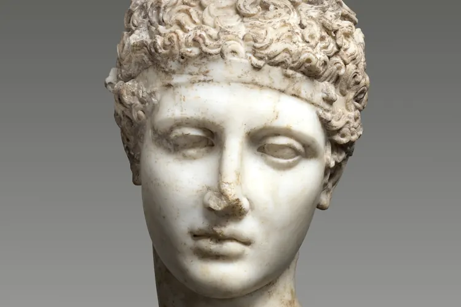

Hunter eyes: откуда взялась мода на «хищный» взгляд
Как сочетание низких бровей и приподнятых уголков глаз стало мемом и почему операции ради этого взгляда требуют осторожности.

Выражение hunter eyes, «глаза охотника», пришло с англоязычных форумов о внешности и за последние несколько лет стало одним из самых узнаваемых терминов луксмаксинга. Так называют взгляд, который кажется сосредоточенным и немного суровым. Под фотографиями актёров и моделей его обсуждают так же подробно, как линию челюсти.
Что именно имеют в виду
В описаниях на форумах обычно повторяются три признака.
- Нижнее веко плотно прилегает к радужке, белок под ней почти не виден.
- Брови посажены низко и близко к верхнему веку.
- Положительный кантальный наклон: внешний уголок глаза выше внутреннего.
Противоположный тип там называют prey eyes, «глаза жертвы»: округлый открытый взгляд с заметной полоской белка под радужкой. Уже само деление на «хищников» и «жертв» показывает, как устроен мем. Он опирается не столько на анатомию, сколько на образ силы и доминирования.
Почему это стало мемом
Термин идеально подходит для коротких видео: два снимка рядом, стрелка к уголку глаза, вердикт. Такой формат легко повторить с любым известным лицом, поэтому он быстро разошёлся по соцсетям и обзавёлся собственным словарём.
При этом представления о красивых глазах сильно различаются между культурами и эпохами. В японской гравюре укиё-э красавиц изображали с узким удлинённым разрезом глаз, а в древнеегипетской живописи глаза обводили густой подводкой, вытягивая линию к вискам. Каноны менялись вместе со временем, и ни один не стал универсальным.
Что говорят хирурги
Вместе с модой появились и предложения клиник. Ради «хищного» взгляда предлагают кантопластику, то есть изменение положения наружного угла глаза, а также операции на бровях. Это вмешательства в зоне с тонкой анатомией, и у них есть известные осложнения: асимметрия, рубцы, сухость глаза, неполное смыкание век, повторные операции.
Иногда результат оказывается обратным желаемому. Нижнее веко отходит вниз, и белка становится видно больше, чем до операции.
«Ко мне приходят со скриншотом актёра. Форма глаза зависит от костей орбиты и мягких тканей, поэтому операция не скопирует чужое лицо, а риски у неё вполне реальные.»
Вельская советует обсуждать любые такие вмешательства только с квалифицированным окулопластическим хирургом, после очной консультации и обследования. Отдельно она предупреждает о роликах с «упражнениями для глаз», которые якобы поднимают внешние уголки. Убедительных данных о том, что такие тренировки меняют форму век и положение связок, нет. Обещания быстрого результата стоит встречать скептически.
Повлиять на взгляд можно и без хирургии. Отёки после короткой ночи или солёного ужина делают веки тяжелее, а лицо более уставшим. Регулярный сон, меньше соли по вечерам и аккуратная коррекция бровей у мастера меняют впечатление заметнее, чем кажется. Если отёки не проходят неделями, это повод показаться врачу.
И главное. Форма глаз зависит от генетики и возраста и ничего не сообщает о характере человека или его ценности. Взгляд, который располагает к себе, чаще связан с выражением лица и вниманием к собеседнику, чем с углом наклона уголков.